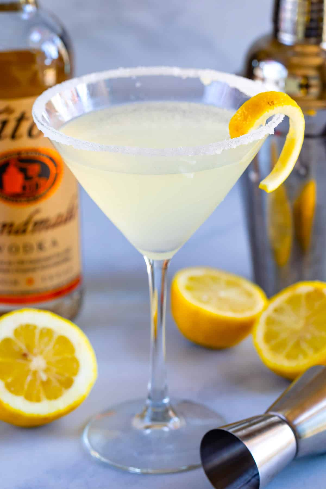

Lemon Drop Martini

Description
This recipe found here, produces a refreshingly sweet and sour cocktail.
For more cocktail recipes visit the Recipes Index
Ingredients
This recipe makes 4 Lemon Drop Martinis:
- Lemon Juice: 4 fluid ounces of freshly squeezed lemon juice.
- Vodka: 2 fluid ounces of vodka.
- Sugar: 1 teaspoon of sugar or more to taste.
- Ice: Crushed ice.
- Lemon: Lemon slices.
- Mint: 4 sprigs of fresh mint.
Steps
All you'll need is a mixing glass.
- Mix sugar, vodka, and lemon juice until the sugar is dissolved.
- Serve in cocktail glasses filled with crushed ice and garnish with lemon and mint.
- Enjoy!